As the Structures Lead, I owned the end‑to‑end structural development of a 10k ft Commercial‑Off‑The‑Shelf hybrid rocket headed to the International Rocket Engineering Competition (IREC) in June 2025. Since team formation in November 2024 we have delivered a flight‑ready prototype, secured sponsorships, and sourced manufacturing partners.
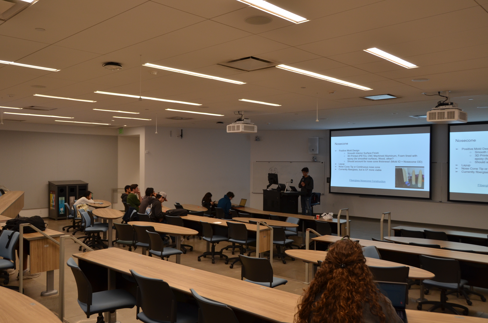
| Sub‑system | Material / Method | Why | Source |
|---|---|---|---|
| Airframe (4″ Ø) | G12 filament‑wound fiberglass tube | Radio‑transparency | Wildman Rocketry |
| Nose cone | 3:1 Fiberglass | Optimized σ/weight & k/weight | Madcow Rocketry |
| Bulkheads | Birch Plywood | G10 Substitute | CNC Laser Cutting |
| Fins | Birch Plywood | G10 Substitute | CNC Laser Cutting |
| Centering rings | PETG (100% infill) | Rapid iteration | 3D Printed |
| Bonding | West System 105/206 epoxy | High Shear Strength | West Systems |
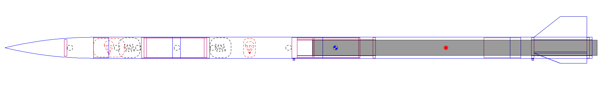
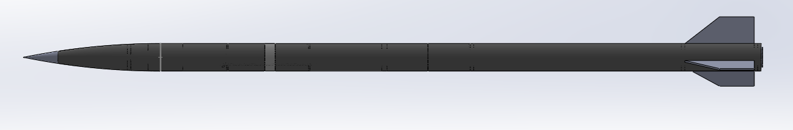
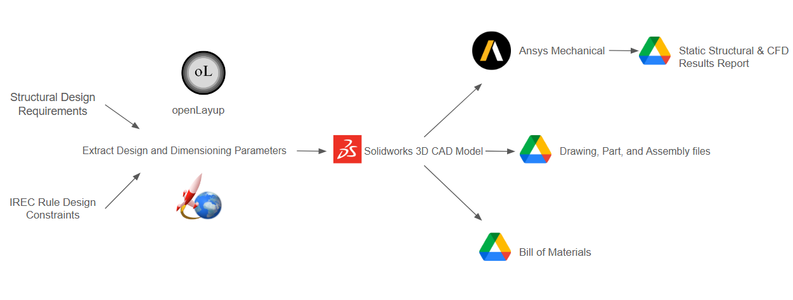
Primary Objective – Achieve the smallest absolute error between predicted and actual apogee while remaining within 30% of the 10k class target. OpenRocket simulations predicted apogees between 10 459 ft and 11 155 ft AGL depending on wind shear.
A three‑fin clipped‑delta layout in filament‑wound fiberglass was selected after a Pugh matrix scored options against stability, drag, ease of manufacture, and cost. Three fins posed no stability nor aerodynamic performance changes when compared to 4 fins, so the team opted for the simpler design of 3 fins. Fiberglass beat carbon because the hybrid's nitrous vent antenna needed RF transparency and the team lacked an autoclave for high‑temperature cure.
Each material choice closed a specific requirement: radio transparency for avionics, manufacturability inside the six‑month window, and safety factor under 256 lbf max thrust.
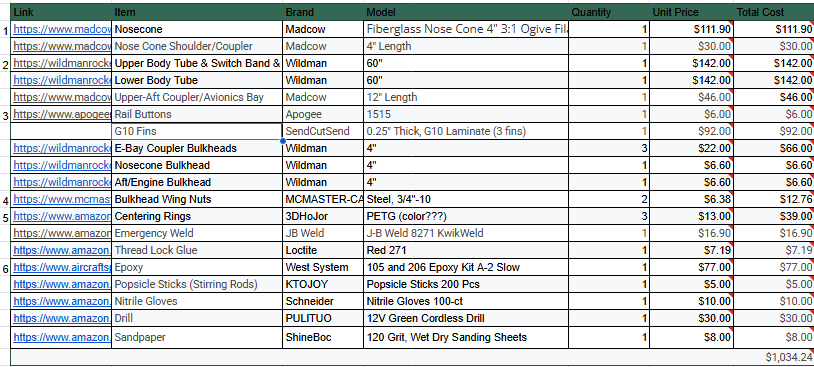
Structural Bill of Materials Excel Sheet
G12 filament wound fiberglass tubes are used for the body tube and nose cone. The vendor provides only basic tensile data, so the laminate was reverse‑engineered: ±45° balanced ply assumption, 80 / 20 fibre‑to‑resin, E‑glass with West System 105 / 206 epoxy. Ideally we would utilize coupon tensile tests (ASTM D3039) to confirm if the laminate's strength properties agreed within predictions, validating the CLT model. However, due to time constraints, the team opted to use the vendor's published data.
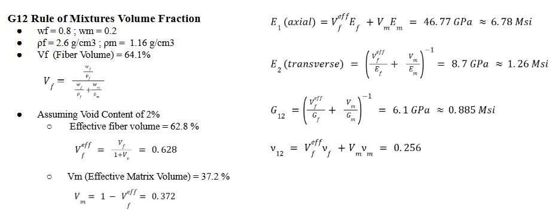
First‑pass hand calculations sized the fins and body tube using the Barrowman method and Euler buckling respectively. With q = 6.6 kPa (Mach 0.92 at 3 700 m) each fin sees 99 lbf normal load, yielding a bending stress of 15 MPa—well below the birch allowable of 34 MPa. To simplify normal force acted on each fin, we set the following assumptions: air flow is inviscid, composed of an ideal gas, subsonic, and laminar, angle of attack is sufficiently small (≤10°), quasi-static loading is justified since rate of change of aerodynamic forces and angle of attack do not change rapidly, steady-state flight conditions apply at a single instance during steady-angled flight (no significant acceleration or angular velocity change during instance), fins act as thin flat plates and its wall boundaries are smooth, primary aerodynamic loads occur normal to fin surface.
Nf = q · A · CNα · α ≈ 440 N
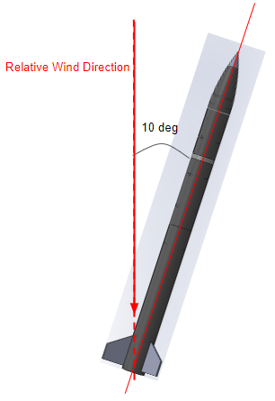
To improve the robustness of our dual-deployment parachute system, we increased the main and drogue charge masses from the previously flight-tested 3.34 g and 2.12 g loads to 4.5 g and 4.0 g respectively. This adjustment was designed to ensure reliable deployment across a range of edge conditions, including ignition at specified high-altitude level, and blackpowder charge performance. The updated charges were selected to generate sufficient impulse to guarantee clean failure of the nylon shear pins without overstressing the coupler or bulkhead interfaces. This allowed us to maintain a strong margin of safety while ensuring reliable separation in all expected flight scenarios. Pass/fail criteria for the test were defined as follows: Pass: Both primary charges initiate clean separation within the designed time window, verified by full bay actuation and physical confirmation of shear pin failure without structural damage to surrounding airframe. Fail: Incomplete separation, misfire, or visible structural deformation of the bulkhead or coupler. For redundancy, both the main and drogue bays were preloaded with 6.0 g backup charges. These secondaries were sized to independently achieve successful deployment in the event of a primary failure, preserving recovery capability without exceeding mechanical design limits. This testing approach established a validated force envelope for future flights and demonstrated the importance of integrating system-level design margins, fault tolerance, and practical pass/fail criteria into high-risk operations.
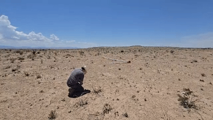
Metrological thickness checks across differnt points along body tubes showed the walls averaged 0.0625 in—about 4.17 % thicker than the manufacturer's nominal value and within our ±1⁄16 in measurement tolerance—while the couplers held at 0.060 ± 0.004 in. Because the tubes and couplers came from different vendors and the tubes ran slightly heavy, we had to sand the couplers extensively to slide smoothly without creating an airtight seal that could trap a vacuum. Future builds will eliminate this mixed-vendor mismatch by single-sourcing all airframe stock.
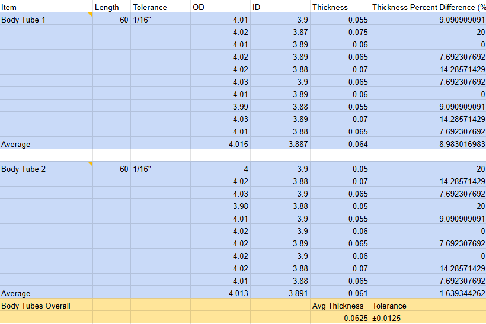
Competition manufacturing operations crammed into forty‑eight hours on‑site after dust storms shredded the range schedule. Rapid joints used medium‑cure USComposites 3∶1 epoxy. An internal epoxy drip between aft tube and coupler later blocked motor insertion; the defect was corrected by diamond‑reaming and finish‑sanding with 800 → 1200 grit.

Bulkhead, Coupler, and Centering Ring Connection Process: All structural connections to the body tubes followed a standardized bonding procedure. The connection surfaces were first prepared using 120 grit sandpaper to create a reasonably scuffed and rough texture, significantly increasing the effective surface bonding area. This surface preparation was critical for achieving optimal epoxy adhesion strength. Following surface preparation, the components were bonded using epoxy adhesive, ensuring proper alignment and uniform adhesive distribution across the prepared surfaces.
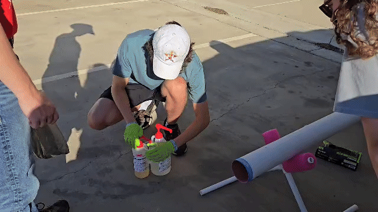
Do not copy me here, make sure to wear proper PPE when working with epoxies and composites.
Bolt Pretensioning and torque validation was performed for payload and avionics bay hardware.
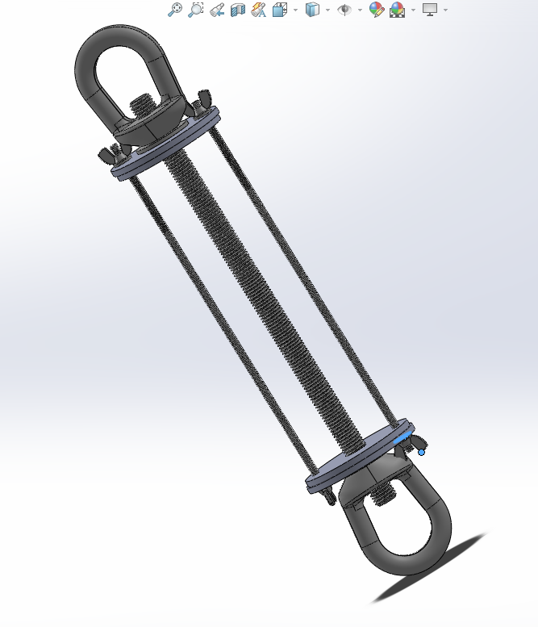
The main question: How much preload force should we apply to bolts?
Answer: As much as possible, but less than the clamping force that could damage the bulkhead joint.
Common practices for preload specifications for bolts are to reach 70% of the Yield strength of the bolt material:
Preload @70% yield = P = 0.7 × σy × A (bolt circular cross sectional area)
Applied Torque calculation:
Applied Torque = P × D × K
Where: P = preload force, D = nominal bolt diameter, K = nut factor (typically K = 0.2)
Turn-of-Nut Technique: Preload accuracy ±15% (used due to ease of assembly implementation)
Notes: Use Loctite 271 for eye nuts if high vibration expected. Apply anti-seize compound for frequent disassembly to prevent thread galling.


Payload/Avionics Bay CAD


Payload/Avionics Bay Assembled

Coupler Attachment
Slot Hole Manufacturing: The Slot_holes.png template was used as a guide for cutting slot holes in the bulkheads. These holes were precision-cut using a Dremel tool equipped with a conical diamond bit, ensuring accurate alignment and proper clearance for the threaded rods.
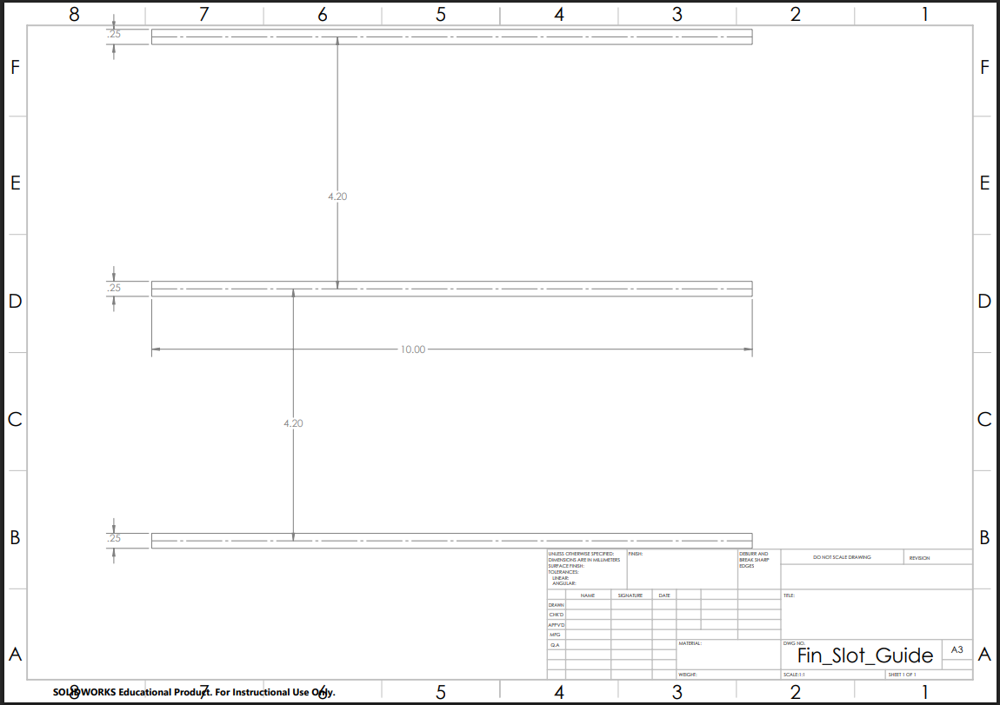
Slot Holes Template
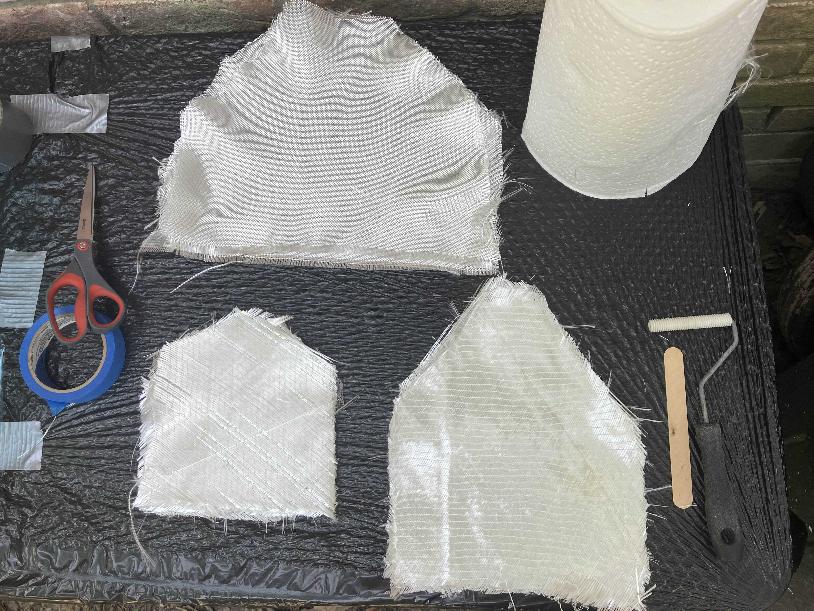

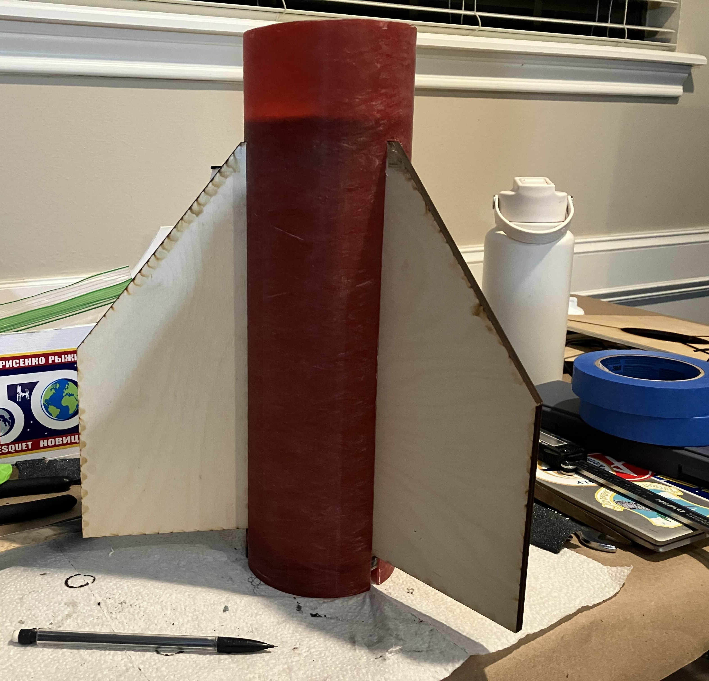
Fin FG T2T Application, Laser Cut, and Canning
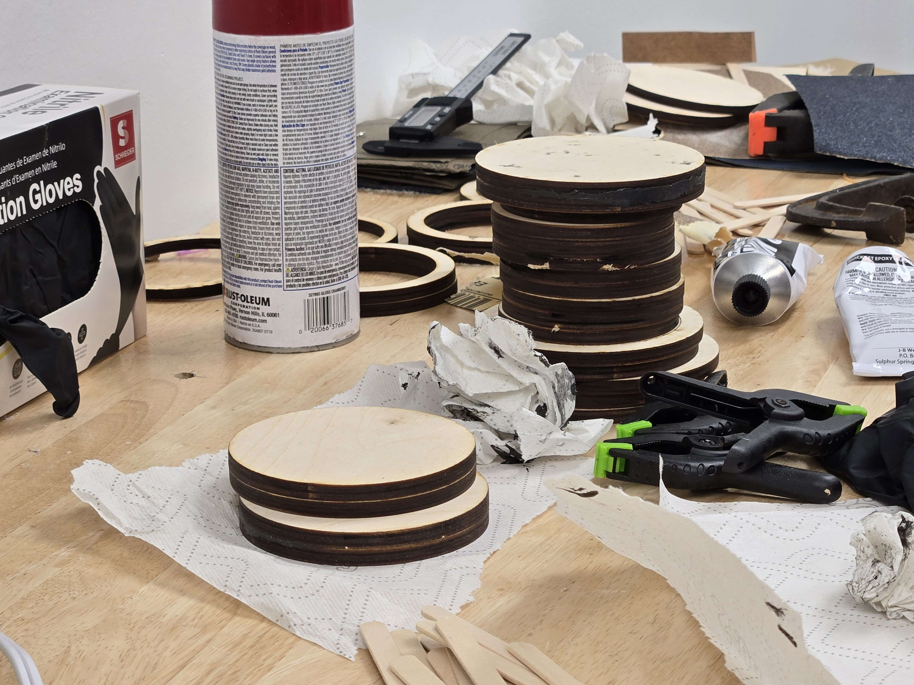
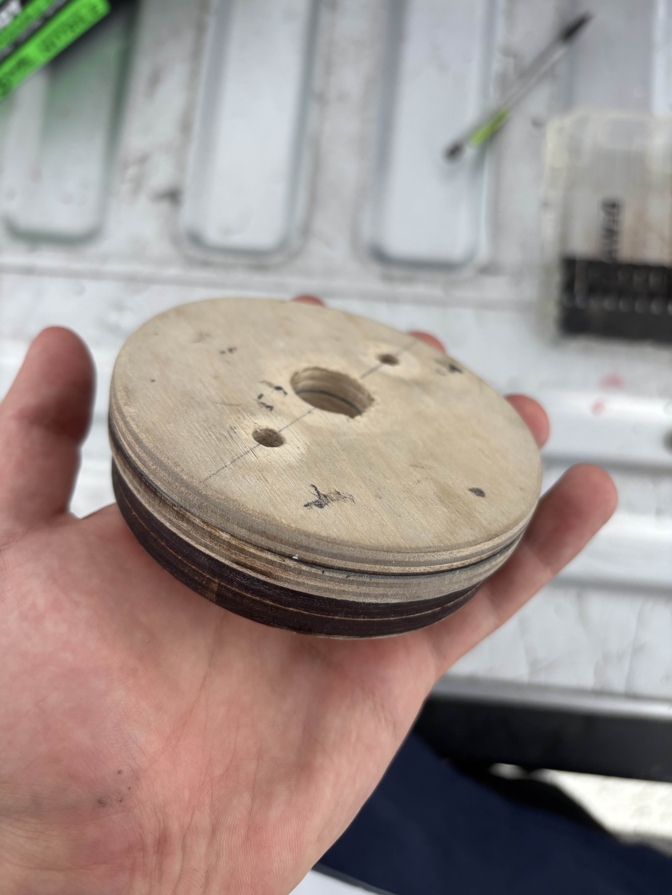
Laser cut bulkheads and assembly
Go / No‑Go matrix enforced green status on avionics continuity, motor retention, and telemetry lock before pad departure.
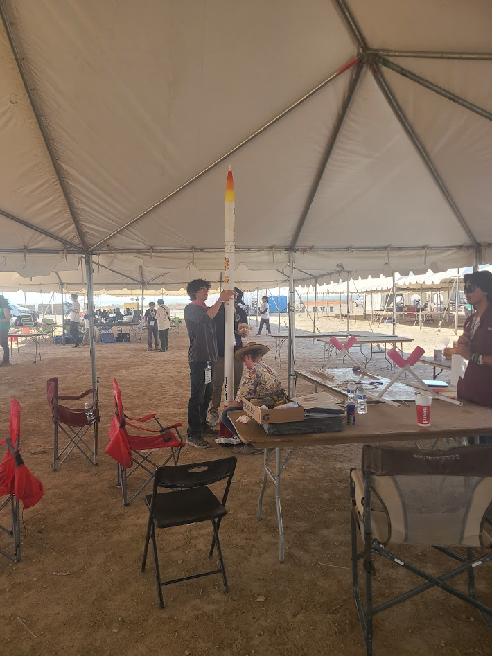
Final rocket weigh-in
Top open risks at final review were: (1) coupler tolerance in desert grit, (2) nitrous vent icing, (3) team fatigue. Mitigations included oversize sanding, water‑trolley vent visualisation, and a two‑shift operations roster. Spare shear‑pinned nose module and redundant igniters were on‑site.
Launch was scrubbed minutes before L‑0 when range closed at 12:00 due to severe dust–storm gusts. No telemetry beyond pad diagnostics; therefore trajectory comparison is not available.
Scrubbing the first flight was disappointing but invaluable. The coupler fit issue, vent‑hole placement, and motor length mis‑match exposed systemic gaps in BOM control and schedule float. Next cycle priorities are:
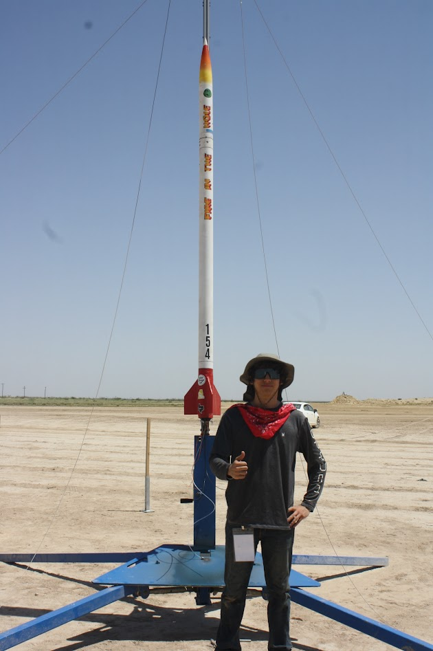
TL;DR – Built a 4″ hybrid to 10 k ft spec, scrubbed by desert storm; lessons learned embedded above, next flight scheduled Fall 2025.